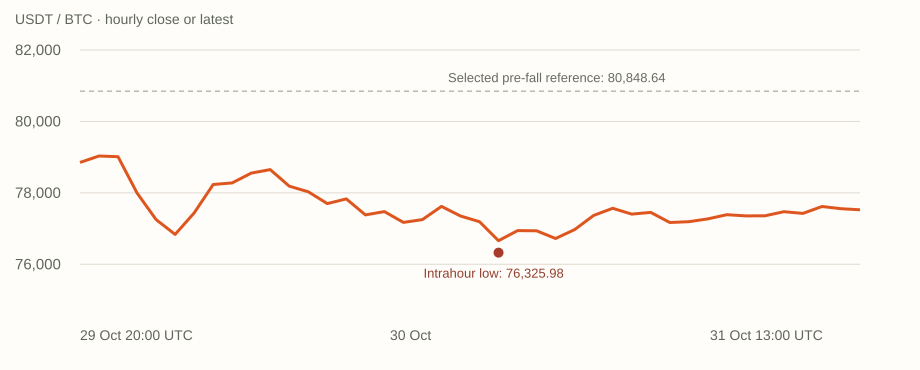

Market stress
A sharp fall tests more than your patience.
On 29 and 30 October 2026 Bitcoin fell about 5.6% within a day. Here is what the prices show, what they do not say about the bot, and why the same fall is a different event with borrowed money.
Market observations and worked scenarios, for understanding. They are not advice and they are not NoGuru results.
Find something on this page
29–30 October 2026: a sharp Bitcoin fall.
These are Binance’s BTC/USDT spot prices, read on 31 October 2026. They are one exchange’s prices, not a global price and not the return of any NoGuru account.

| Reading | Price (USDT) | When (Zurich time) | Against the reference |
|---|---|---|---|
| Reference | 80,848.64 | 29 Oct, 21:00 | A chosen starting minute, not the exact start of the fall. |
| Low in the sample | 76,325.98 | 30 Oct, between 19:00 and 20:00 | About 5.59% below. |
| Last saved reading | 77,526.01 | 31 Oct, 14:00 | Still about 4.11% below. |
This shows a market event, not what the bot did.
The prices do not show how NoGuru or any subscriber’s account came through. An account holds different coins and cash, and its value also changes through trades, deposits, withdrawals and fees.
The same fall, without borrowed money.
A separate example with round numbers: a coin goes from 100 to 85 and back to 100.
- Before the fall, at 100. You buy one coin for 100 with your own money. Nothing is borrowed. You hold the coin.
- At the low, 85. The coin is worth 85, which is 15% less than you paid, before costs. Nothing forces a sale, but the loss in value is real. Another buy here would commit more money.
- If it recovers to 100. The coin is worth what you paid again. Fees can still leave you slightly below. This path is assumed; nothing says when or whether it happens.
- If it falls to 40 instead. The coin may fall further and never come back. At 40 it is worth 60% less than you paid. Having no stop loss does not limit that.
The same fall, with borrowed money.
Now take the same coin bought at 100 with 10× leverage: 10 of your own money and 90 borrowed. Assume no extra money is added, no fees, and that the exchange requires 0.5% of the position’s value to be left as a minimum.
What is left of your money at price P is 10 + (P − 100). Under these assumptions the position is closed by the exchange when that equals 0.005 × P, which is at about 90.45.
A fall to 85 crosses that line.
The position would be closed before the low was reached, and a large part of the 10 could be lost. A later recovery to 100 does not bring back a position that has already been closed.
The exact line differs by exchange: each has its own price reference, minimum levels, fees and closing rules. The point is the difference in kind. With your own money a fall is a loss in value you can wait out; with borrowed money it can end the position.
What would show that an account recovered?
Readings of the account’s whole value before the fall, at the low and later, in the same currency, with deposits, withdrawals, transfers and fees accounted for. A higher balance alone does not show what the strategy did.
The public record of signals cannot stand in for a subscriber’s own account.
What the NoGuru bot does in a fall
It buys more in steps as the price falls, up to a fixed limit per coin. That lowers the average cost and commits more money. The sale can then come above the new average and below the first buy. If the price does not get there, the coins stay open.